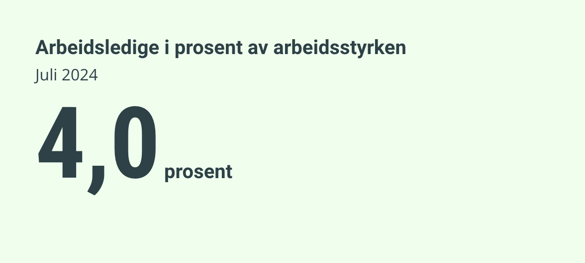
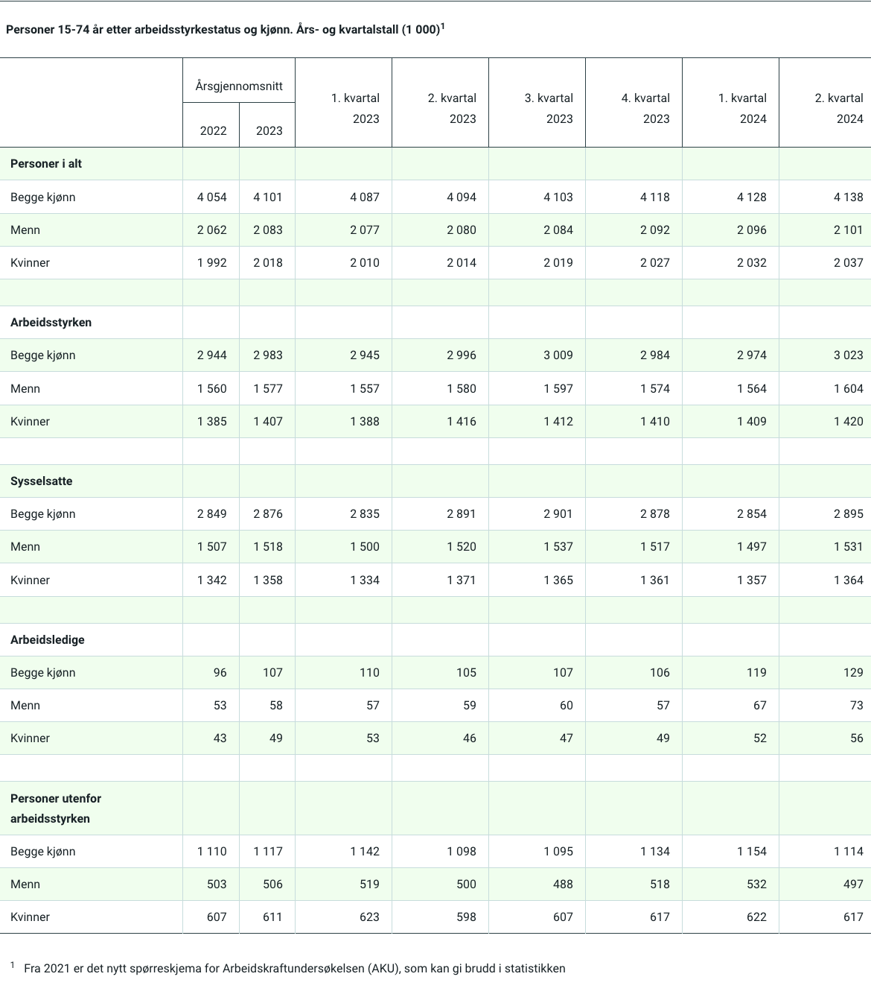

Stabil arbeidsledighet og økt sysselsetting i Norge: Juli 2024-tallene viser et sterkt arbeidsmarked
De nyeste tallene fra Arbeidskraftundersøkelsen (AKU) for juli 2024 gir en tydelig indikasjon på stabilitet i det norske arbeidsmarkedet. Arbeidsledigheten holder seg på 4,0 prosent, tilsvarende 121 000 personer, en andel som har vært uforandret fra juni 2024. Samtidig er det en liten, men positiv økning i sysselsettingen, med 2 000 flere personer i arbeid sammenlignet med forrige måned. Dette bringer det totale antallet sysselsatte opp til 2 884 000, eller 69,6 prosent av befolkningen i alderen 15 til 74 år.

Stabil arbeidsledighet på 4,0 prosent
Arbeidsledigheten forblir uendret på 4,0 prosent, noe som tyder på at den norske økonomien har klart å motstå de utfordringene som mange europeiske land nå står overfor. Med 121 000 personer registrert som arbeidsledige, viser tallene at det ikke har vært noen økning i antallet ledige siden forrige måned. “Vi ser en stabil utvikling i arbeidsledigheten, noe som kan indikere en viss robusthet i arbeidsmarkedet,” sier Torbjørn Røe Isaksen, leder for arbeidslivsseksjonen i Statistisk sentralbyrå (SSB). “Dette er gode nyheter for norsk økonomi, spesielt sett i lys av de økonomiske svingningene vi har sett internasjonalt.”
Økt Sysselsetting - Flere menn og kvinner i arbeid
Selv om arbeidsledigheten har holdt seg stabil, er det verdt å merke seg den økningen i sysselsettingen som tallene også viser. Samlet sett er det nå 2 884 000 personer i arbeid, noe som er en økning på 2 000 personer fra juni til juli 2024. Dette representerer en viktig milepæl ettersom andelen sysselsatte utgjør 69,6 prosent av befolkningen mellom 15 og 74 år. Denne veksten i sysselsettingen er fordelt på begge kjønn. For menn har antallet sysselsatte økt fra 1 531 000 til 1 537 000 i løpet av andre kvartal 2024, mens antallet sysselsatte kvinner steg fra 1 357 000 til 1 364 000 i samme periode. Dette viser en jevn fremgang for begge kjønn, som reflekterer et bredere oppsving i arbeidsmarkedet.
Langsiktige trender og muligheter
De langsiktige trendene viser også interessante mønstre. Mens sysselsettingen har økt jevnt og trutt de siste kvartalene, har arbeidsledigheten holdt seg på et relativt stabilt nivå, noe som kan peke mot en langsiktig forbedring i arbeidsmarkedet. Fra første kvartal til andre kvartal i 2024 var det en økning i det totale antallet sysselsatte personer fra 2 854 000 til 2 895 000. Dette tilsvarer en vekst på 41 000 personer, noe som indikerer en styrket etterspørsel etter arbeidskraft i flere sektorer. Samtidig ser vi at antallet personer utenfor arbeidsstyrken, det vil si de som ikke aktivt søker arbeid eller er tilgjengelige for arbeid, har hatt en liten nedgang. Fra første til andre kvartal 2024 falt dette tallet fra 1 154 000 til 1 114 000. Dette kan være et tegn på at flere mennesker enten kommer tilbake til arbeidsstyrken eller finner sysselsetting, noe som igjen kan være et resultat av et mer positivt økonomisk klima og bedre jobbmuligheter.
Utfordringer og fremtidsutsikter
Selv om tallene tegner et bilde av stabilitet og vekst, er det likevel utfordringer som må adresseres. Økonomer peker på at selv en stabil arbeidsledighet på 4,0 prosent kan skjule regionale og sektorielle forskjeller. For eksempel kan noen sektorer, som teknologi og helse, oppleve en betydelig mangel på kvalifisert arbeidskraft, mens andre sektorer kan slite med lav etterspørsel og potensielle nedskjæringer. Videre er det også et behov for å fokusere på grupper som fortsatt står utenfor arbeidsmarkedet. Ungdomsledighet, selv om det ikke er spesifikt fremhevet i de siste tallene, forblir en bekymring. Ifølge de siste dataene fra SSB har ungdomsledigheten vært høyere enn det nasjonale gjennomsnittet, noe som betyr at flere unge voksne sliter med å få fotfeste i arbeidslivet. Regjeringen har tidligere kunngjort en rekke tiltak for å støtte sysselsettingen, inkludert programmer for å øke kompetansen i arbeidsstyrken, spesielt innenfor teknologi og grønn industri, som forventes å vokse betydelig i årene som kommer. “Vi jobber for å sikre at flere kommer i arbeid og at de som allerede er i jobb, får muligheter til å utvikle sine ferdigheter og kompetanser,” sier arbeids- og inkluderingsminister Marte Mjøs Persen.
Et positivt, men utfordrende bilde
Tallene for juli 2024 viser at arbeidsmarkedet i Norge er i en god tilstand, med stabil arbeidsledighet og økende sysselsetting. Likevel er det nødvendig med målrettede tiltak for å sikre at denne trenden fortsetter, og at også de mest sårbare gruppene inkluderes i arbeidsstyrken. Mens norsk økonomi ser ut til å være på vei mot en positiv retning, vil de kommende månedene være avgjørende for å sikre videre fremgang og inkluderende vekst for alle sektorer og befolkningsgrupper. Arbeidskraftundersøkelsen for juli 2024 gir derfor både grunn til optimisme og en påminnelse om viktigheten av langsiktige strategier for å styrke det norske arbeidsmarkedet ytterligere.